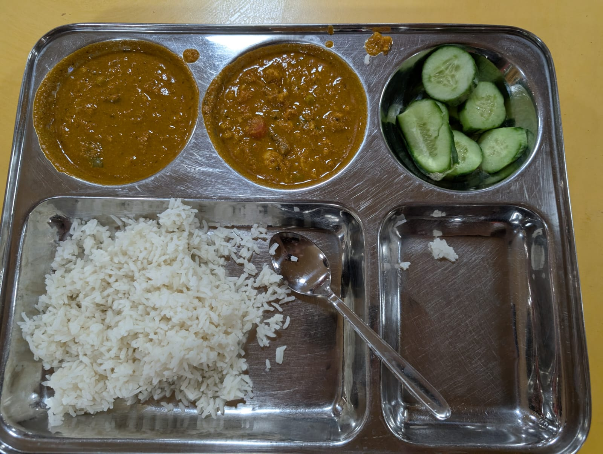
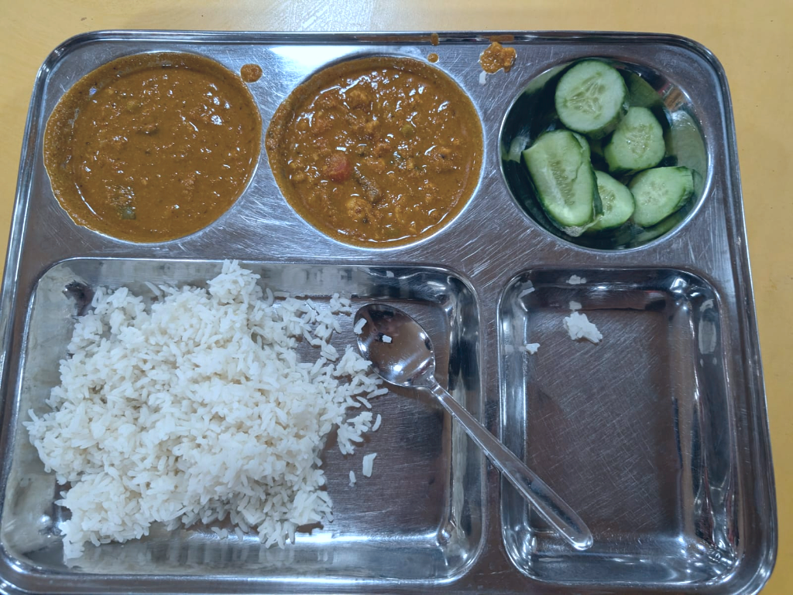
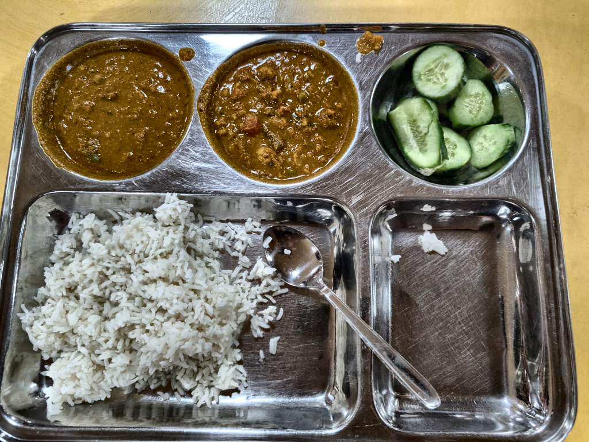
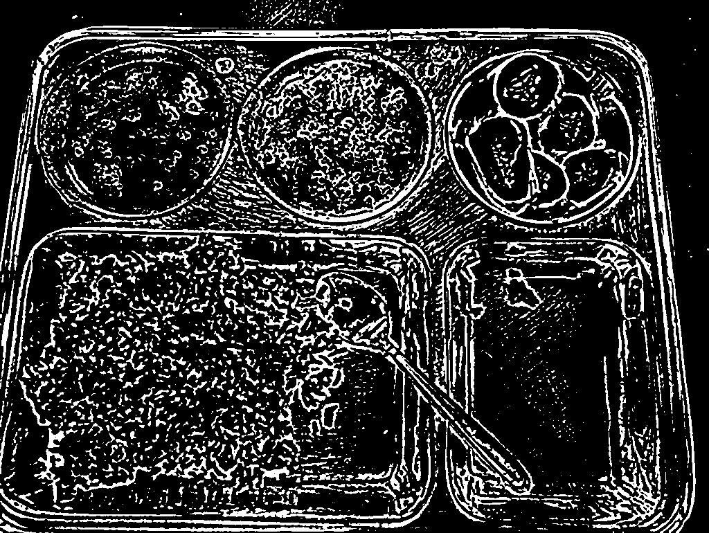
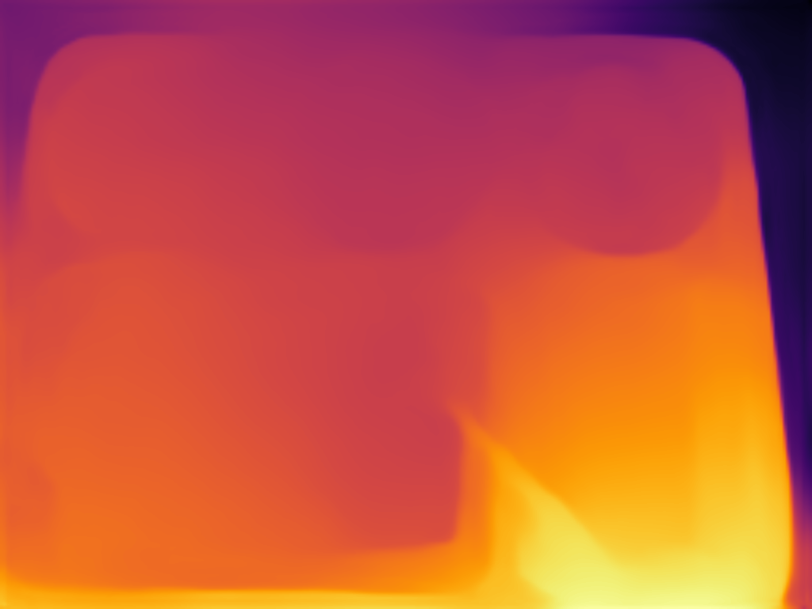
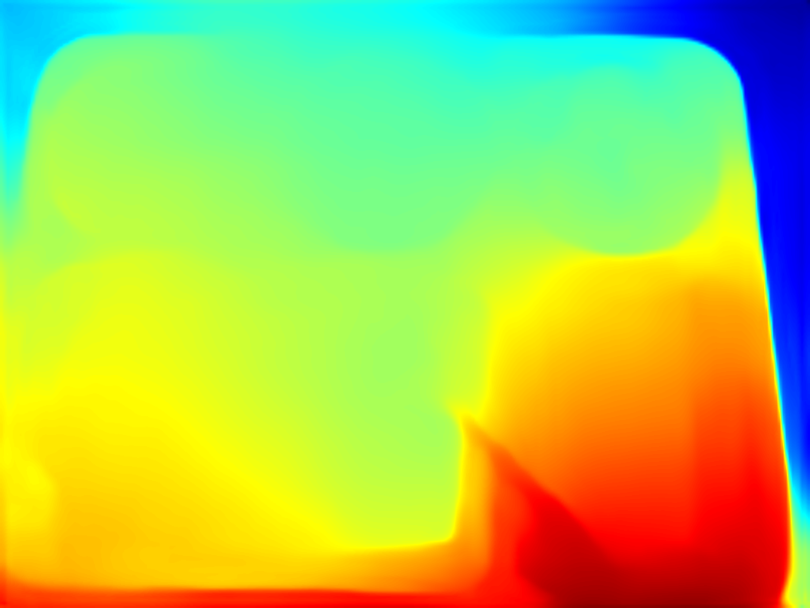
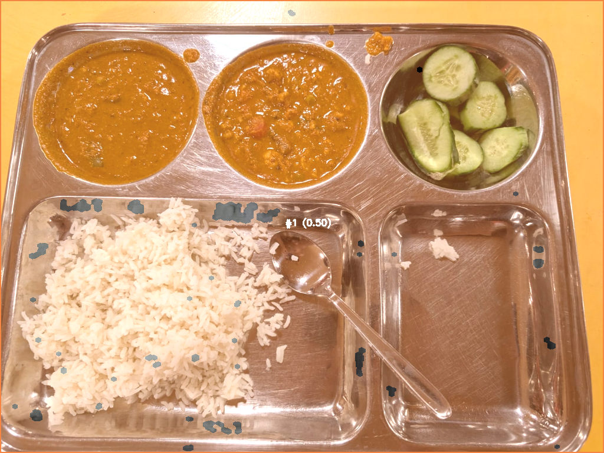
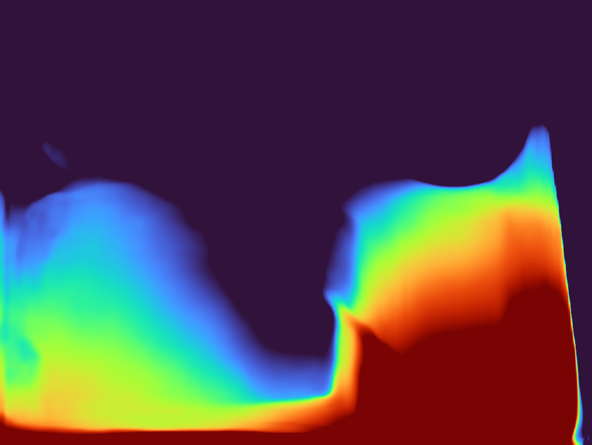
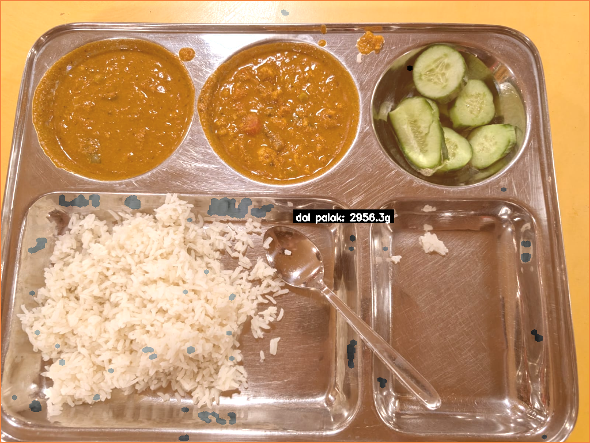

{
"resolution": "1600x1204",
"channels": 3,
"dtype": "uint8",
"expected_items": [
"dal palak",
"chapati",
"aloo capsicum"
],
"plate_profile": null,
"debug": true
}









[]
{
"item_id": "dal palak_1",
"area_pixels": 777705,
"estimated_height_cm": 2.858,
"volume_estimate_ml": 2815.5,
"density": 1.05,
"mass_g": 2956.3
}

{
"food_items": [
{
"name": "dal palak",
"volume_ml": 2815.5,
"mass_g": 2956.3,
"calories": 2512.9,
"protein": 162.6,
"carbs": 354.8,
"fat": 59.1,
"confidence": 0.5
}
],
"confidence": 0.5
}[
{
"step": "Input",
"message": "Original image saved",
"params": {
"resolution": "1600x1204"
},
"elapsed_s": 0.0849,
"input_file": null,
"output_file": "original.png",
"timestamp": "2026-04-06T20:09:44.201116"
},
{
"step": "Pipeline",
"message": "Step 1 — Preprocessing & Perspective Warp",
"params": {},
"elapsed_s": null,
"input_file": null,
"output_file": null,
"timestamp": "2026-04-06T20:09:44.201116"
},
{
"step": "Preprocessing",
"message": "Resize applied",
"params": {
"original": "1600x1204",
"target_long_edge": 1024,
"scale": 0.64
},
"elapsed_s": 0.0059,
"input_file": null,
"output_file": "01_resized.png",
"timestamp": "2026-04-06T20:09:44.245685"
},
{
"step": "Preprocessing",
"message": "Gaussian blur applied",
"params": {
"kernel": 5
},
"elapsed_s": 0.001,
"input_file": null,
"output_file": "02_denoised.png",
"timestamp": "2026-04-06T20:09:44.284378"
},
{
"step": "Preprocessing",
"message": "LAB color normalization applied",
"params": {},
"elapsed_s": 0.1353,
"input_file": null,
"output_file": "03_color_normalized.png",
"timestamp": "2026-04-06T20:09:44.457047"
},
{
"step": "Preprocessing",
"message": "CLAHE contrast enhancement applied",
"params": {
"clip_limit": 2.0,
"tile_grid": "8x8"
},
"elapsed_s": 0.0047,
"input_file": null,
"output_file": "04_contrast_enhanced.png",
"timestamp": "2026-04-06T20:09:44.503024"
},
{
"step": "Preprocessing",
"message": "Canny edge detection",
"params": {
"low": 50,
"high": 150
},
"elapsed_s": 0.0079,
"input_file": null,
"output_file": "05_edges.png",
"timestamp": "2026-04-06T20:09:44.516080"
},
{
"step": "Preprocessing",
"message": "Warp skipped (no 4-pt contour)",
"params": {
"warped": false
},
"ela| Step | Message | Params | Time |
|---|---|---|---|
| Input | Original image saved | {"resolution": "1600x1204"} | 0.0849s |
| Pipeline | Step 1 — Preprocessing & Perspective Warp | — | — |
| Preprocessing | Resize applied | {"original": "1600x1204", "target_long_edge": 1024, "scale": 0.64} | 0.0059s |
| Preprocessing | Gaussian blur applied | {"kernel": 5} | 0.0010s |
| Preprocessing | LAB color normalization applied | — | 0.1353s |
| Preprocessing | CLAHE contrast enhancement applied | {"clip_limit": 2.0, "tile_grid": "8x8"} | 0.0047s |
| Preprocessing | Canny edge detection | {"low": 50, "high": 150} | 0.0079s |
| Preprocessing | Warp skipped (no 4-pt contour) | {"warped": false} | — |
| Preprocessing | Complete | {"output_size": "1024x770"} | 0.3557s |
| Pipeline | Step 2 — Detecting compartments & Scale | — | — |
| Compartment Detection | Detected 0 compartments | {"min_area_frac": 0.02, "max_area_frac": 0.9, "compartment_count": 0} | 0.0075s |
| Compartment Detection | Scale computed | {"cm_per_pixel": 0.03559, "pixel_area_cm2": 0.00126671, "compartments": 0} | 0.0559s |
| Pipeline | Step 3 — Depth Estimation | — | — |
| Depth Estimation | MiDaS depth map computed | {"device": "cpu", "shape": [770, 1024], "min": 118.956, "max": 779.021} | 9.0527s |
| Depth Normalization | Baseline subtracted from depth | {"baseline": 491.261} | 0.0176s |
| Depth → cm Conversion | Height map converted to centimeters | {"z_plate_cm": 43.73, "cm_per_pixel": 0.03559} | 0.0040s |
| Depth Estimation | Complete | — | 9.1365s |
| Pipeline | Step 4 — Full-Plate Segmentation | — | — |
| Segmentation | 1 food items segmented | {"method": "color_fallback", "total_candidates": 0, "rejected": 0, "accepted": 1} | 0.0113s |
| Segmentation | 1 food items found | — | 0.0830s |
| Pipeline | Step 5 — Volume & Mass estimation | — | — |
| Volume Estimation | Computed mass for 1 items | {"total_items": 1} | 0.0071s |
| Pipeline | ✅ Pipeline complete | {"total_food_items": 1, "avg_confidence": 0.5} | 9.8139s |